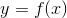
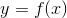
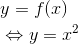
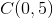

Funcții surjective
Definiția FE20: Funcție surjectivă
Funcția  se numește surjectivă dacă, oricare ar fi , există astfel încât .
se numește surjectivă dacă, oricare ar fi , există astfel încât .
Cu alte cuvinte, oricărui element din codomeniu este imagine pentru cel puțin un element din domeniu.
Exemple:
- Funcția este o funcție surjectică, deoarece oricărui element din codomeniu îî corespunde un element din domeniu, așa cum se poate observa în diagrama de mai jos:

Observație:
Această funcție nu este o funcție injectivă, deoarece avem că , dar imaginile lor , ceea ce contrazice definiția funcției injectivă (vezi pagina anterioară).
- Funcția nu este surjectivă (și nici injectivă).

Exercițiu: să se specifice de ce această funcție nu este surjectivă și nici injectivă.
- Funcția este o funcție atât injectivă, cât și surjectivă.

Avem că imaginea unei funcții este formată din următoarea mulțime:
.
Această mulțime este inclusă în codomeniu:
Propoziția FE21: Condiție de sujectivitate
Funcția este surjectivă, dacă și numai dacă
Exemplu:
Pentru exemple date la injectivitate, verificăm proprietatea de surjectivitate.
Studiem surjectivitatea celor trei funcții de mai jos:

Fie . Căutăm  , astfel încât .
, astfel încât .
Avem:
De aici ne rezultă că funcția  este surjectivă.
este surjectivă.

Fie . Căutăm , astfel încât .
Atunci:

Cum ne rezultă că dar de unde obținem că intervalul nu conține elemente astfel încât
Sau, de exemplu, pentru avem că aceasta nu este imagine pentru nici un  deoarece, nu există astfel încât
deoarece, nu există astfel încât
Așadar, această funcție nu este surjectivă.
Această funcție nu este surjectivă, deoarece există un  care nu este imagine pentru
care nu este imagine pentru
Alte exemple:
Această funcție este surjectivă, deoarece, pentru orice există  , astfel încât de unde avem că
, astfel încât de unde avem că
Fie astfel încât .
Arătăm că există ![\begin{align*} x\in\left [ -1,5 \right ] \end{align*}](../../../media/webbooks/531/4254/images/equations/uhd2pqplektcnjnn8bbb1q==.gif) , cu .
, cu .
Obținem că:
Verificăm dacă , adică, dacă
Sau , de unde obținem că funcția  este surjectivă.
este surjectivă.
Metoda grafică
Funcția este surjectivă, dacă orice paralelă la axa de forma cu , intersectează graficul funcției cel puțin o dată.
Exemplu:
Fie funcția Să se studieze surjectivitea acestei funcții.
Rezolvăm acest exemplu prin trei metode; toate metodele încep astfel:
Consultând pagina Graficul funcției de gradul al II-lea, din cadrul eBook-ului Ghid | Funcția de gradul al II-lea, avem că graficul acestei funcții este o parabolă convexă.
Calculăm coordonatele vârfului parabolei :
Determinăm punctele de intersecție ale graficului cu axele de coordonate:
Rezolvăm ecuația de gradul doi, folosind noțiunile furnizate de pagina Definiție. Ecuația de gradul al II-lea, din cadrul aceluiași ghid amintit mai sus:
Avem punctele  și .
și .
Ne rezultă punctul .
Reprezentăm grafic funcția  :
:

Metoda I: Metoda grafică
Observăm că există o dreaptă, de exemplu , care este paralelă cu axa  , așa cum se poate vedea în graficul de mai jos:
, așa cum se poate vedea în graficul de mai jos:
.png)
Se observă că această dreaptă nu intersectează graficul funcției  în nici într-un punct, de unde ne rezultă că nu există un element astfel încât
în nici într-un punct, de unde ne rezultă că nu există un element astfel încât
Așadar, funcția nu este surjectivă.
Metoda II: Imaginea funcției
Folosind Propoziția FE18: Condiție de sujectivitate verificăm surjectivitatea funcției :
De aici, avem că nu este o funcție surjectivă.
Metoda III: Definiția surjectivității
Folosim Definiția FE17: Funcție surjectivă.
Fie
Avem:
Această ecuație are soluție dacă
Calculăm
Avem condiția de unde ne rezultă că:
Dar, cum ne rezultă că funcția nu este surjectivă.